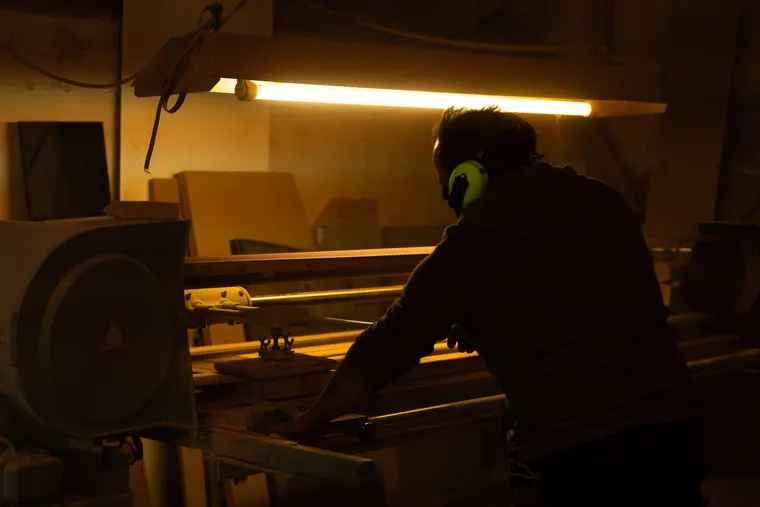

★★★★★
„Exzellenter Kundenservice, hochwertige und ausgefallene/individualisierte Ware. Ich bin hocherfreut und kaufe jederzeit wieder gerne!“
Massive Schneidebretter, bei denen Bauweise, Format und Gewicht zu deiner Nutzung passen.
5 Fragen zu Nutzung, Größe und Gewicht.
Aktuell verfügbar
Drei unterschiedliche Werkzeuge zeigen, wie Material, Bauweise und Einsatz zusammengehören: ein bewegliches Langholzbrett, ein massiver Stirnholzblock und ein Küchenhelfer.

Erbstück-Serie · nummerierte Einzelstücke
Historisches Holz wird zum nummerierten Einzelstück für den Alltag – nur wenn Material, Zustand und gewünschte Nutzung zusammenpassen.
Kundenstimmen
63 Verkäufe und echte Rückmeldungen von Menschen, die unsere Produkte bereits nutzen oder verschenkt haben.
Über uns
Edle Hölzer entstand aus der gemeinsamen Arbeit von Özgür und Serkan an Holz, Fotografie und Produktauftritt. In der Werkstatt werden Bretter einzeln ausgewählt, zugeschnitten, geschliffen und geölt; online zeigen wir, wie Material, Kanten und Nutzung zusammenhängen.
Ich bin Gründer von Edle Hölzer, Handwerker seit rund 20 Jahren und verantwortlich für Entwurf, Holzauswahl und Fertigung.
In Mittelhessen fertige ich Schneidebretter aus Eiche, Nussbaum, Fachwerkholz und weiteren ausgewählten Hölzern – bewusst ohne CNC.
Jedes Brett wird einzeln zugeschnitten, geschliffen und geölt. Dadurch bleiben Proportion, Griffgefühl und Oberfläche keine anonyme Serienentscheidung.
Ich bin Ingenieur, Hobbyfotograf und verantwortlich für den Online-Auftritt von Edle Hölzer.
Mein Part ist es, Özgürs Handwerk sichtbar zu machen: durch Fotos, Videos und eine klare Darstellung dessen, was hinter den Produkten steckt.
Mich interessiert nicht künstliches Marketing. Mich interessiert, dass Holzart, Zuschnitt, Oberfläche und Pflege so erklärt werden, dass Käufer die Qualität selbst einordnen können.
Von Mittelhessen nach Europa
Von unserer Werkstatt aus haben Bretter und Küchenhelfer bereits ihren Platz in vierzehn Ländern Europas gefunden. Jedes Symbol steht für ein Stück Edle Hölzer, das dort angekommen ist.

Brettfinder
Ob Frühstück, Kochen, Grillen, Schenken oder Pflegen – der Finder startet beim Moment und führt dann zu passenden Produkten.
Beweis statt Behauptung
Frühstück, Kochen oder Grillen fühlen sich anders an, wenn Gewicht, Kante und Oberfläche stimmen. Das Holzstück ist kein Dekostück. Es ist das Werkzeug, das den Moment ruhiger, greifbarer und dauerhafter macht.
Ein massives Brett bewegt sich beim Arbeiten weniger schnell.
Gerundete Kanten entscheiden darüber, ob sich ein schweres Brett angenehm greifen lässt.
Schleifen und Ölen sind keine Dekoration, sondern Teil der Haptik.
Eiche, Nussbaum und Stirnholz verhalten sich unterschiedlich. Deshalb beraten wir nicht pauschal.
Aufbereitungsservice
Was bei einer mechanischen Uhr die Revision ist, ist bei einem massiven Brett die fachgerechte Aufbereitung: Substanz prüfen, nur das Nötige abtragen und die Oberfläche neu aufbauen.
Wenn Zeit, Werkzeug oder Erfahrung fehlen, übernehmen wir Diagnose, Schliff und Finish in unserer Werkstatt. Das spart Staub, Fehlversuche und einen Neukauf, wenn das Brett noch genügend Substanz besitzt.


Werkstatt
Traditionelle Maschinen, denen wir aus gutem Grund treu bleiben. Präzise eingestellt, sauber geführt und eingesetzt für Ergebnisse, die nicht nur heute gut aussehen, sondern auch morgen noch überzeugen.


Weiterdenken
Ein fester Platz, ein gebrauchtes Lieblingsbrett oder eine kleine Firmenserie brauchen einen anderen Weg als ein verfügbares Einzelstück.

Nächster Schritt
Starte mit dem Brettfinder oder frage direkt an, wenn Ort, Maß, Gravur oder Anlass wichtiger sind als ein Standardprodukt.